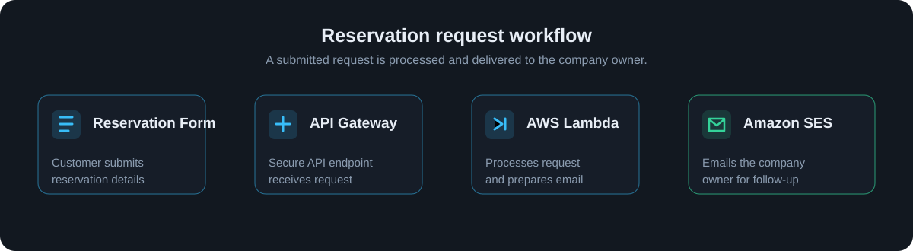
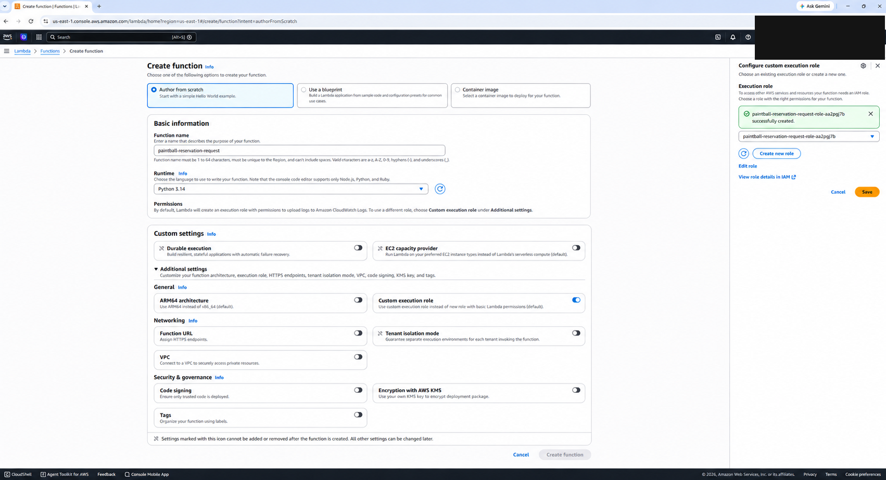
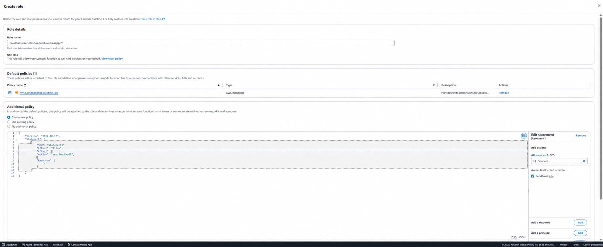
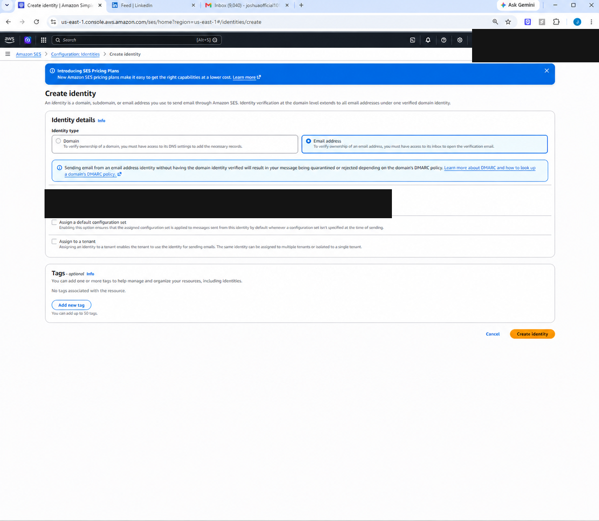

AWS Amplify Reservation Website
Overview
I am building a new website for a company that gives customers a simple way to submit reservation requests online. The site is deployed with AWS Amplify, with AWS Lambda handling the server-side work needed to deliver each request to the business owner.
View current test website →Note: The website is currently running on an AWS Amplify-generated domain. The company plans to keep its existing domain name and will provide access within one to two weeks after website approval. Route 53 can be used for DNS hosting or a full domain transfer, depending on the company's preference.
Customer Requests
- Updated front-end styling
- A dedicated reservation page
- Very low maintenance
- Easy content and reservation updates
Architecture
-
Customer-facing website
Customers can browse the company website and complete a reservation form with the details the owner needs to review the request.
-
AWS Amplify hosting
AWS Amplify hosts and deploys the website, providing a managed cloud deployment workflow for the public-facing application.
I chose Amplify instead of a standalone S3-hosted site because it connects directly to the GitHub repository and provides Git-driven CI/CD. Pushing updates to the connected branch can automatically build and deploy the website, making routine deployment and maintenance straightforward.
S3 static hosting is also a valid option, but a similar automated deployment workflow would need to be configured separately—for example, with GitHub Actions or AWS CodePipeline and CodeBuild. Amplify keeps that source-to-deployment workflow together in one managed service for this project.
-
Reservation request processing
When a customer submits the reservation form, the website sends the request to an AWS Lambda function. The function processes the submitted details and forwards the reservation request to the company owner for follow-up.
Reservation Email Workflow

Reservation Email Setup
-
Create the Lambda function and SES role
I created the Lambda function
paintball-reservation-requestusing Python 3.14. I configured it with a custom execution role so the function can write logs to CloudWatch and send reservation notifications through Amazon SES.The role includes the AWS-managed
AWSLambdaBasicExecutionRolepolicy for CloudWatch logging and an additional policy grantingses:SendEmail. This gives the function the permission it needs to send the reservation email to the company owner.
Creating the paintball-reservation-requestLambda function with the custom execution role.
Lambda execution role with CloudWatch logging and Amazon SES send-email permission. -
Verify the email identity in Amazon SES
Before Lambda can send a reservation notification, I verified the sending email address in Amazon SES. In the SES console, I opened Configuration, selected Verified identities, chose Create identity, selected Email address, and entered the email address to use for reservation notifications.
After selecting Create identity, Amazon SES sends a verification message to that inbox. Opening the message and confirming the verification link completes the identity verification.

Creating an Amazon SES email identity for reservation notifications.
Project goals
The goal is to give the company a professional, reliable web presence while making reservation inquiries easier to manage. Using managed AWS services keeps the deployment streamlined and separates the public website from the server-side request workflow.